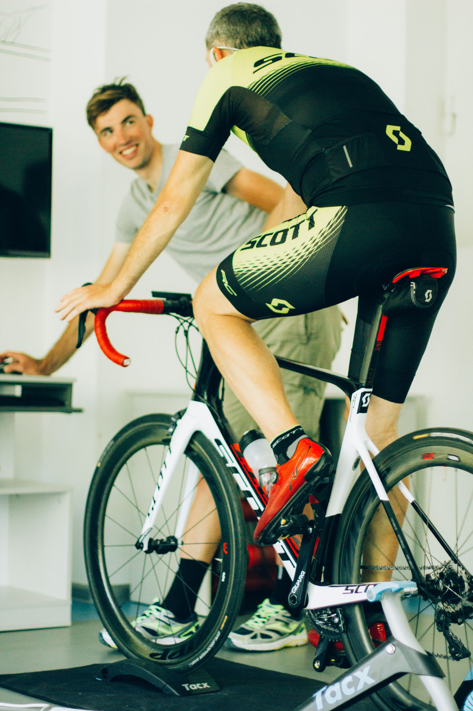

Коучинг та сервіси для циклічних видів спорту
Наші партнери
Коучинг та сервіси
Базовий підхід однаковий, як для аматорів, так і для про рівня спортсменів. Головна мета - перенести професійні навички та сервіс в аматорський спорт. Незалежно від потреб - підвищення фітнесу чи участі у змаганнях, наш накопичений досвід, кваліфікація та наука спрямовані на досягнення ваших цілей.
Професійні поради Наукова база Команда професіоналів
Магазин
Топове спортивне харчування SiS та все, що потрібно для велоспорту і не тільки. Велосипеди, гаджети, форма від наших ексклюзивних партнерів.
CycleX Club
Бути в ком'юніті з професіоналами та аматорами, незалежно від вашого міста та команди. Слідкуй та приймай участь у тренуваннях та змаганнях з нашими спортсменами по всьому світу у Strava та Zwift.